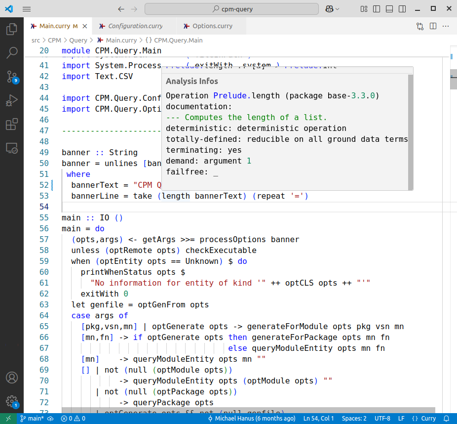
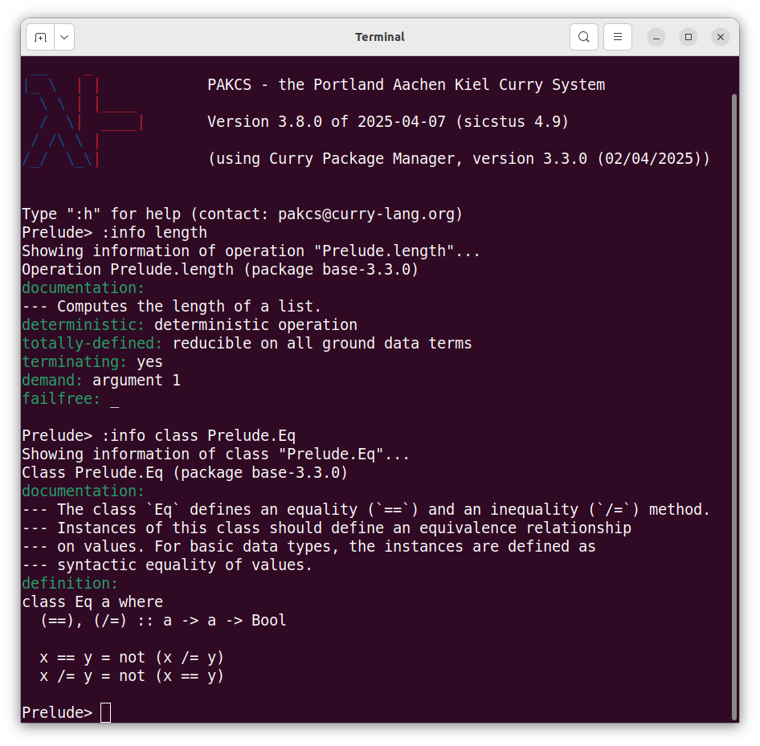
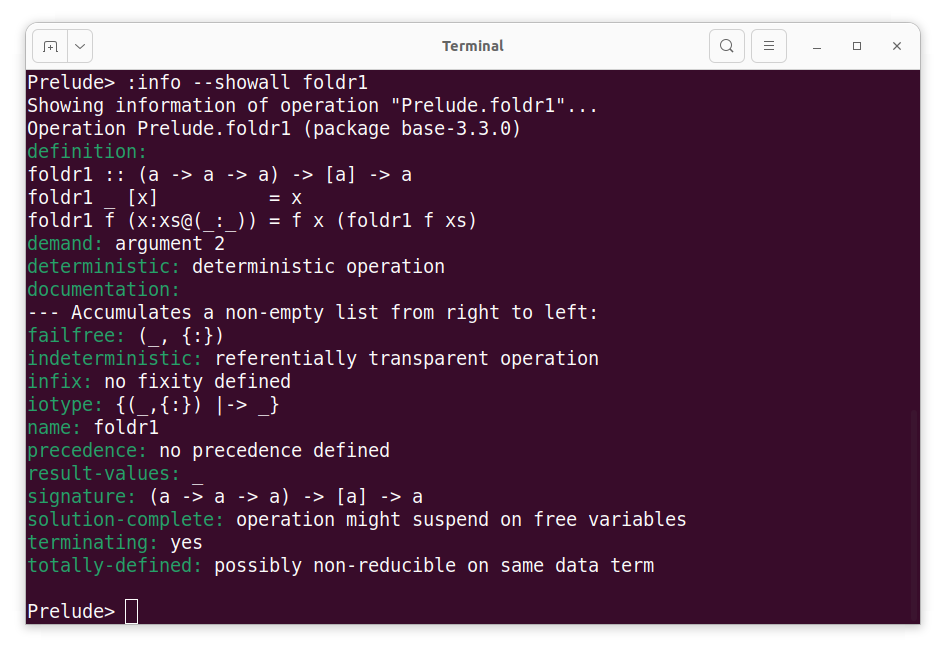

CurryInfo is a tool to collect and provide analysis and verification information about entities (operations, types, classes) defined Curry modules which are contained in Curry packages. This website contains a collection of this information and a web service for a convenient access of it. It can be used by other Curry tools which require such information, like a REPL or a Curry Language Server.
Here is some more information about CurryInfo and this website.
~/.curry_info_cache)
in order to use CurryInfo on the local machine instead of this
CurryInfo web service. The download and installation can easily
be done by the command
The Curry Language Server
supports an extension for invoking programs when hovering over
particular program entities, like operations or types.
If one uses the tool
cpm-query,
one can see analysis and verification
information when hovering over an entity defined in some module
of an existing Curry package.
The image below shows a screenshot when hovering over
the standard Prelude operation length.

See the description of the Curry package
cpm-query
for more information how to configure the
Curry Language Server
to show this information.
One can also show information from CurryInfo in a REPL of a Curry
system, e.g.,
PAKCS.
This is supported by the command :info
which invokes the tool
cpm-query
to show the information.
In the screenshot below, the command
:info length shows information about operation
length (the operation must be in the scope of the REPL,
otherwise it needs to be qualified) and
the command :info class Prelude.Eq shows information
about the class Eq defined in module
Prelude (the module must be in some package of the
current application).

Note that only a subset of all available information is shown
in the default case. One can adjust the information to be shown
by modifying the file ~/.cpmqueryrc which is
generated when cpm-query is invoked for the
first time. One can also show all available information
by adding the option --showall in the
:info command, as shown in the screenshot below.
